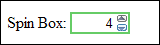
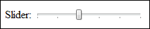

Spinners and Sliders
Two other HTML5 controls you can add to forms are spinners and sliders. Sadly, though, only Opera and Chrome support the spinner. A spinner allows you to increase or decrease a number in a box by clicking little up and down arrows. They look like this in the Opera browser:

The HTML code for the spinner box looks like this:
<INPUT TYPE="NUMBER" MIN="0" MAX="10" STEP="2" VALUE="6" SIZE="6">
The TYPE is "Number". The MIN and MAX are the start and end values you want for the box. In other words, a user can't go higher than 10 or lower than 0. The STEP attribute is the increase or decrease in value when you click on the arrows. In our code above, we go up in steps of 2 (2, 4, 6, 8, 10). The VALUE is the default that appears in the box when the page loads, and also the value that is returned when the form is sent. SIZE refers to how wide you want the box.
Sliders work in the Opera, Chrome and Safari browsers. They look like this:

You can move the slider left or right to change the value. The HTML code is this:
<INPUT TYPE="RANGE" MIN="0" MAX="10" STEP="2" VALUE="4">
The TYPE is "Range". The other attributes are the same as for the spin box.
In the next lesson, you'll learn about Dates and Times in HTML 5.